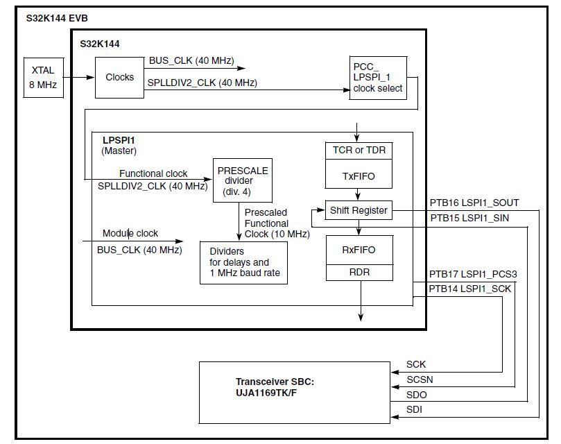

Description
A simple LPSPI transfer is performed using FIFOs which can improve throughput. After initialization,
a 16 bit frame is transmitted at 1 Mbps. Software will poll flags rather than using interrupts and/or
DMA. The SBC’s status register is read to variable LPSPI1_16bits_read. For UJA1169 the value normally read
will be 0xFDEF.
S32K144 EVB Note: The example uses LPSP1 with Peripheral Chip Select 3, which connects to transceiver
UGA1169TK/F1. To power the SBC, connect an external 12V supply to the EVB and connect pins 1-2 on jumper
J107. A USB cable can still be connected to the EVB to allow debug to continue. If the SBC is not powered,
the LPSPI data in will be all zeros.

Design
- Disable watchdog.
- System clocks: Initialize SOSC for 8 MHz, sysclk for 80 MHz, RUN mode for 80 MHz
- Initialize LPSPI1:
- Module control:
- Disable module to allow configuration
- Configure LPSPI as master
- Initialize clock desired configurations for a 10 MHz prescaled functional clock (100 usec period):
- Prescaled functional clock frequency = Functional clock / PRESCALE = 40 MHz / 4 = 10 MHz
- SCK baud rate = (Functional clock / PRESCALE) / (SCKDIV+2)
- (40 MHz / 4) / (8 + 2) = 10 MHz / 10 = 1 MHz
- SCK to PCS delay = 5 prescaled functional clocks = 50 nesc
- PCS to CSK delay = 10 prescaled functional clocks = 1 usec
- Delay between transfers = 10 prescaled functional clocks = 1 usec.
- FIFO Control:
- RxFIFO: Receive Data Flag (RDF) set when # words in FIFO > 0
- TxFIFO: Transmit Data Flag (TDF) set when # words in FIFO < = 3
- Configure Transmit Commands (other configurations could be applied later, for example, for data
that uses a different chip select and frame size):
- Prescale functional clock by 8 (80 MHz / 8 = 10 MHz prescaled functional clock)
- Frame size = 16 bits
- PCS3 used for peripheral chip select
- SCK polarity active low
- Phase: Data changed on SCK leading edge, captured on SCK trailing edge
- MSB first, byte swap disabled, continuous transfer disabled
- Single bit width for transfer
- Normal FIFO use: Rx data stored in Rx FIFO, Tx data loaded from Tx FIFO
- Module Control:
- Enable module, including in debug and doze modes
- Initialize port pins for LPSPI1
Loop:
- Wait for Transmit Data Flag (TDF) to be set (indicates Transmit FIFO availability), then write one
SPI frame to Transmit FIFO and clear flag
- Wait for Receive Data Flag (RDF) to set (indicates Receive FIFO has data to read), then read
received SPI frame and clear flag. Expected data: 0xFDEF from UJA1169TK/F
- Increase counter
Pins definitions (connected to UJA1169):
| S32K14x | LPSPI1 | S32K11x | LPSPI0 | S32K148 | LPSPI1 |
| PTB14 | LPSPI1_SCK | PTB2 | LPSPI0_SCK | PTA28 | LPSPI1_SCK |
| PTB15 | LPSPI1_SIN | PTB3 | LPSPI0_SIN | PTA29 | LPSPI1_SIN |
| PTB16 | LPSPI1_SOUT | PTB4 | LPSPI0_SOUT | PTA27 | LPSPI1_SOUT |
| PTB17 | LPSPI1_PCS3 | PTB5 | LPSPI0_PCS0 | PTA26 | LPSPI1_PCS3 |
Driver Functions (S32K14x):
main.c
#include "device_registers.h"
#define SBC_MC33903
#ifdef SBC_MC33903
#else
#endif
{
WDOG->CNT=0xD928C520;
WDOG->TOVAL=0x0000FFFF;
WDOG->CS = 0x00002100;
}
{
PCC->PCCn[PCC_PORTB_INDEX ]|=PCC_PCCn_CGC_MASK;
PORTB->PCR[14]|=PORT_PCR_MUX(3);
PORTB->PCR[15]|=PORT_PCR_MUX(3);
PORTB->PCR[16]|=PORT_PCR_MUX(3);
PORTB->PCR[17]|=PORT_PCR_MUX(3);
}
{
uint32_t counter = 0;
for(;;)
{
counter++;
}
}
 1.8.15
1.8.15